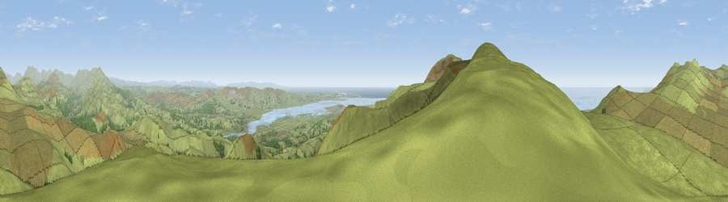

Viewpoint near Hallthwaites
#1002 in England · top 10% of its area beats it · near HallthwaitesThe view, rendered

A 360° render of this exact spot computed from the terrain model, tree cover and land cover — summer colours, afternoon light, calibrated against photographs of famous viewpoints. Real trees, hedges and buildings will differ in detail.
The panorama
Grey silhouette: terrain skyline in each direction (720 bearings, Earth curvature and refraction included). Dashed green: skyline with trees (+15 m) and buildings (+8 m) as obstacles. Blue strip: how far the ground is visible on each bearing.
Where the view opens
Wedge length = distance to the farthest visible ground on that bearing (vegetation-aware). Rings at 10, 25 and 50 km.
What fills the view
91% grassland · 4% water · 4% woodland
Angular shares of the visible panorama (visual magnitude), not map area. Landscape diversity 0.18 (0–1 Shannon).
Key numbers
More beautiful places nearby
The staircase of upgrades: each row has a higher view potential than everything closer. Driving times are estimates from straight-line distance, calibrated against real road routing — check an actual route before setting out.
| Place | Direction | Drive | Score |
|---|---|---|---|
| Viewpoint near Hallthwaites | WSW · 0 km | ~1 min | 80.9 |
| Viewpoint near Ulpha | NNW · 3 km | ~7 min | 82.3 |
| Viewpoint near Whitbeck | SW · 4 km | ~9 min | 85.9 |
| Viewpoint near Whitbeck | SW · 4 km | ~9 min | 88.1 |
| Viewpoint near Whitbeck | SW · 5 km | ~11 min | 88.3 |
| Viewpoint near Boot | N · 16 km | ~29 min | 88.9 |
| Viewpoint near Finsthwaite | E · 23 km | ~38 min | 90.3 |
| The Knoll | S · 402 km | ~384 min | 91.0 |
54.28229, -3.29076 · source: screening · position refined by local search. Computed location — check access rights before visiting.